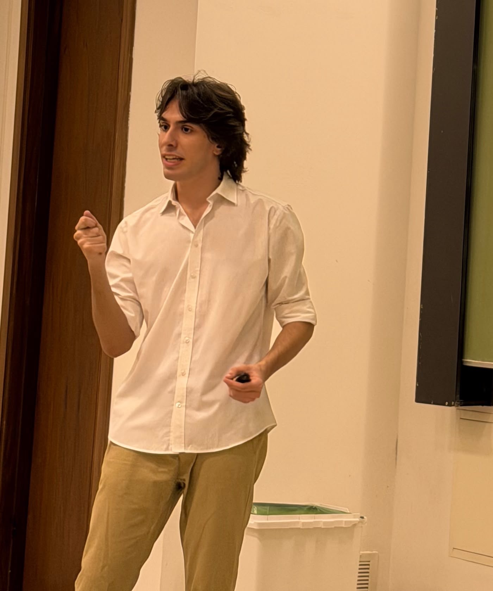

Hi 👋, I'm Facundo Alvarez Motta, and I'm intrigued by generative modeling. I'm currently applying to PhD programs for Fall 2027.
I hold a Data Science licentiate degree (a six-year program, equivalent to a bachelor's plus a master's) from the University of Buenos Aires (FCEN-UBA)🇦🇷.
I enjoy doing AI research related to fields such as chemistry, physics and biology. Broadly, I am interested in:
- Diffusion-based generative modeling: continuous & discrete;
- Geometric deep learning;
- World models beyond robotics: exploring the usage of world models outside robotics.
News
- Best poster award (1st place), at the Deep Learning Spring School presenting my thesis.
- Finished my licentiate degree in Data Science. Thesis